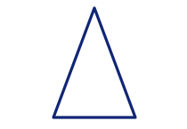
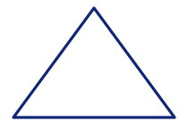
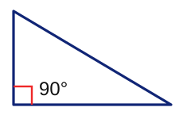
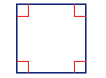
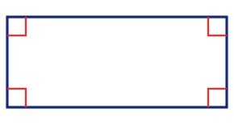
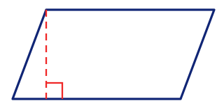
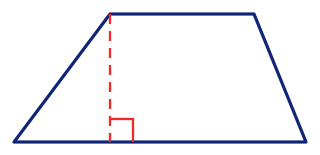
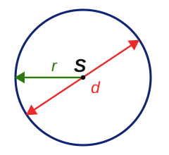
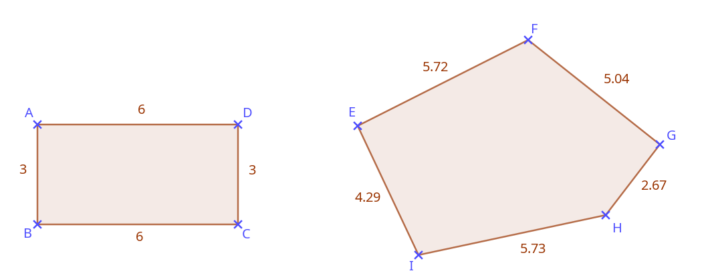

Geometri
1. Vanlige geometriske figurer
Vi skiller mellom to hovedgrupper av geometriske figurer:
- Mangekanter, som består av hjørner forbundet med rette linjestykker som kalles sider.
- Andre figurer med buede linjer, som ellipser og sirkler.
Noen av disse figurene har spesielle egenskaper og egne navn som det er viktig å kjenne til.
Likebeint trekant

To av sidene er like lange.
Likesidet trekant

Alle sidene er like lange.
Rettvinklet trekant

Trekanten har en rett vinkel (90°). De to korte sidene kalles kateter, mens den lengste er hypotenusen.
Kvadrat

Alle sidene er like lange, og alle vinklene er rette.
Rektangel

To og to motstående sider er like lange, og alle vinklene er rette.
Parallellogram

To og to motstående sider er like lange. Sidene som er like lange, er også parallelle.
Trapes

To sider i firkanten er parallelle.
Sirkel

S er sentrum i sirkelen. Alle punktene på sirkelinja ligger like langt fra sentrum. Radien er avstanden fra sentrum til sirkelinja. Diameteren er dobbelt så lang som radien, \(d = 2r\).
2. Omkretsen
Omkretsen til en figur er den totale lengden rundt figuren.
For å beregne omkretsen til en mangekant trenger vi bare å addere lengdene av alle sidene.
Vi trenger altså ikke å lære formler utenat: Vi kan finne dem fram selv!
Vi har rektangelet ABCD og den uregelmessige femkanten EFGHI nedenfor. Lengdene er oppgitt i centimeter.

Omkretsen til rektangelet er derfor \(O = 6+3+6+3=18\text{ cm}\).
Omkretsen til femkanten er \(O = 5{,}72+5{,}04+2{,}67+5{,}73+4{,}29=23{,}45\text{ cm}\).
For rektangelet trenger vi ikke å lære en formel som \(O = 2 \cdot l+2 \cdot b\) utenat: Vi kan finne formelen direkte ved å addere sidene.
Sirkelen er selvfølgelig et unntak. For å beregne omkretsen trenger vi formelen \(O = 2 \cdot \pi \cdot r\).